Name: Yan Jin Song
Student No: 301470175
Date: October 26th 2024
I have not cheated in any way when doing this assignment, I did it on my own. I may have asked questions about the assignment on Coursys, I know that’s totally fine and even encouraged. I also already know that this class is graded on a curve. I realize that if I cheat and by some miracle not get caught, any increase in my grade will in turn shift the curve and result in lower grades for my classmates. Any undeserved extra grade would come at the cost of all others. That’s horrible! I would never do it.
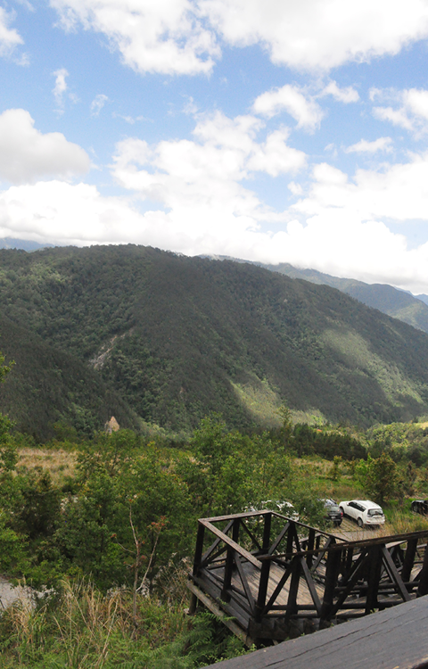
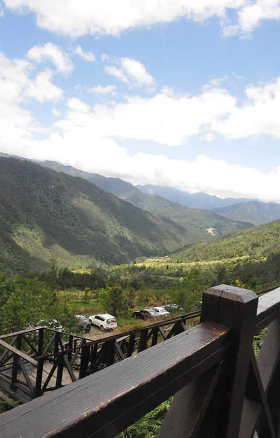
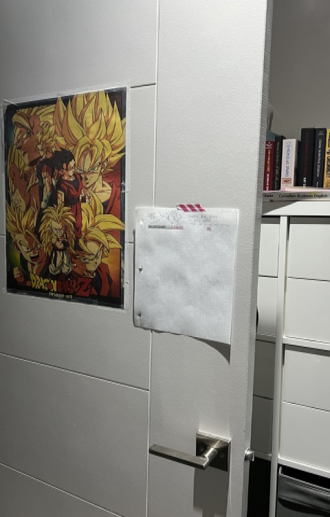
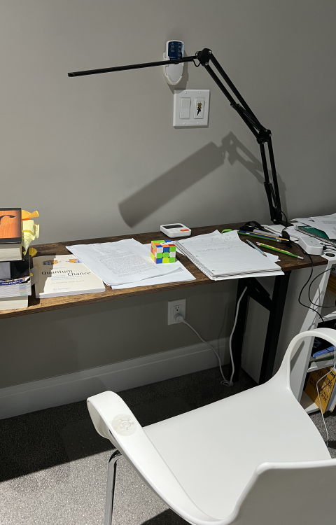
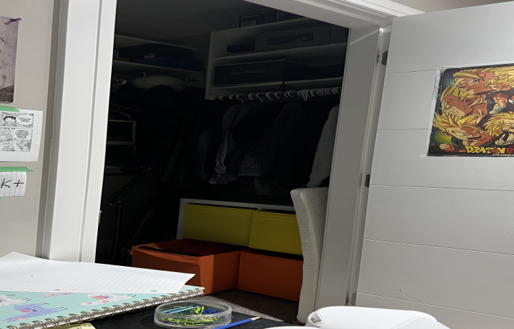
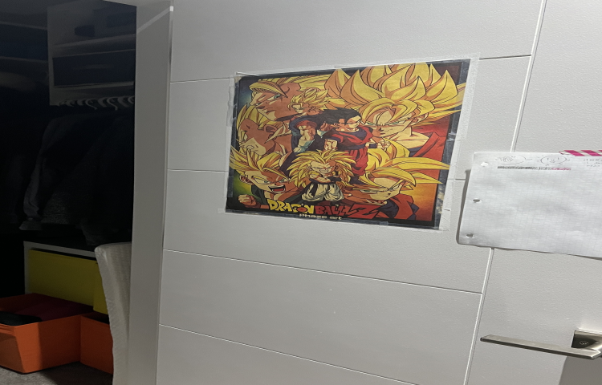


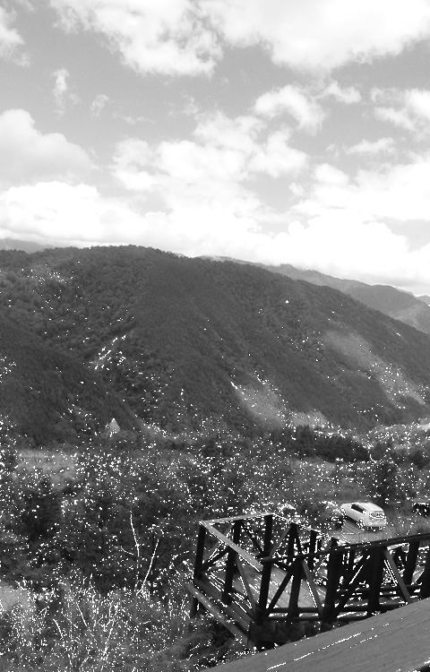
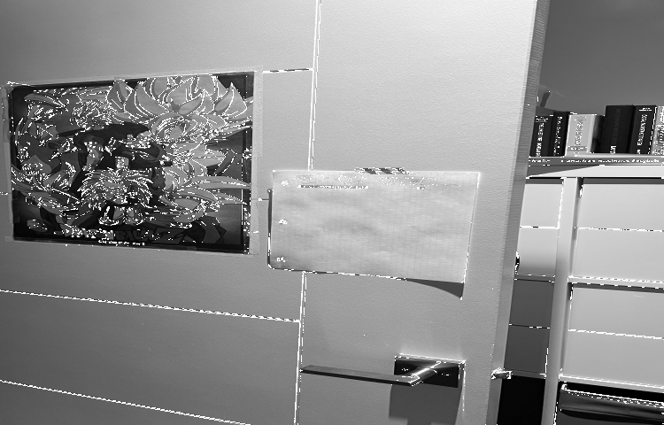


The average time for FAST was 0.0513 seconds, and for FASTR it was 0.0715 seconds. After many rounds of testing, I consistently discovered that FASTR was always around 0.02 seconds slower than FAST. I was a bit surprised by this as there are a lot less points on the FASTR images, but upon second thought it makes a lot of sense as there's a lot more calculation for FASTR. The FASTR algorithm is more complex and requires more computational power, which is why it takes longer to process.
Using Harris corner detection to remove weaker points for the FASTR part made it so that the FASTR image had a lot less points, but the matches were a lot more accurate. Compared with the original FAST images, the FASTR images had a lot less noise. A lot of the edges of the images for FAST were mistaken for corners, but with the FASTR algorithm, there were a lot less of those mistakes. Points on bushes and graphics (like printed text) on the FAST images, for instance, were not present on the FASTR images.


The FAST matching functions took more than double the time for the FASTR functions!
For descriptor generation, FAST took an average of 0.0443 seconds while FASTR only took 0.0190 seconds. So FAST was more than twice as slow as FASTR. For matching, FAST took an average of 0.3191 seconds while FASTR only took 0.0715 seconds. This means FASTR was more than 4 times faster than FAST! This makes sense as FASTR has a lot less points, so there's less computation needed.
I used the ORB method; since I'm using Python, I just called cv.ORB_create through OpenCV. I did a lot of trial and error to find a reasonable threshold for the distance. I tried ranges from 3 to 50 and found that 8 was a good number. When the threshold was too high, there was a ridiculous amount of matches and made the image look like a mess, and when the threshold was too low, there were hardly any matches. So 8, a relatively low number, was a good choice.

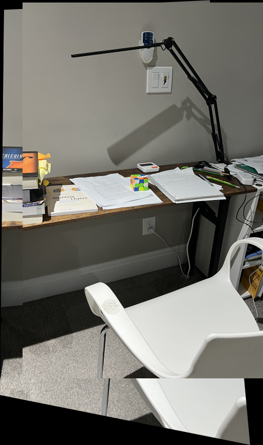
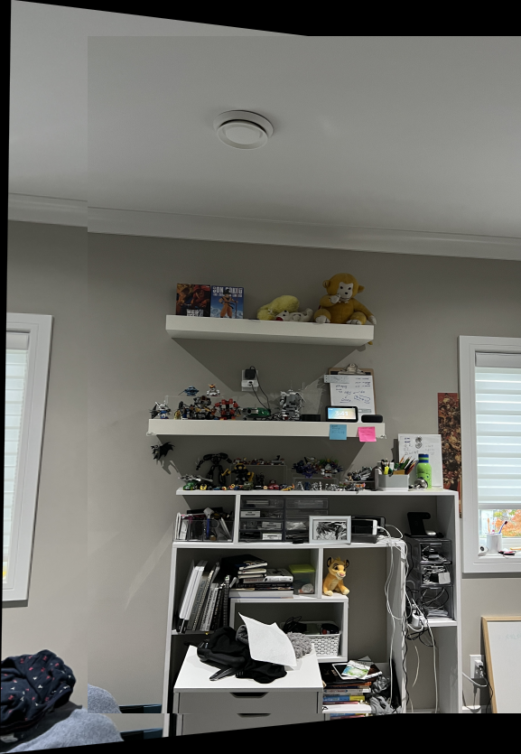
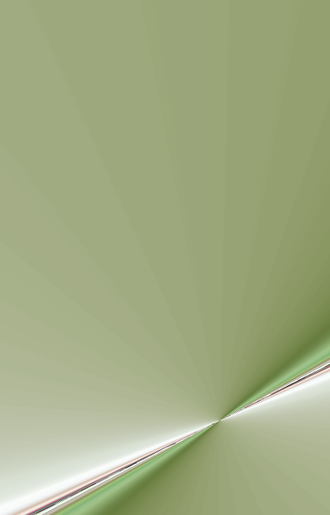
Your comment here